Chapter 14 Customising plots
The default formatting used by ggplot2 has been carefully chosen to ensure the information in a plot is easy to discern. For example, by default, plots include a pale grey background and include grid lines. This is designed to emphasise the data while supporting comparisons. The grey highlights colour differences and ensures the grid lines have little visual impact beyond aiding in the assessment of position. Perfect for exploratory analysis!
Although we can justify these sorts of choices on the grounds they improve the readability of a plot, the fact remains they are somewhat unconventional and not much-loved by many users. For this reason, we often need to change the appearance of a plot before we include it in a document or presentation—e.g. most published figures use a white, rather than grey, background.
This chapter will demonstrate how to customise ggplot2 plots. We are not going to cover every possible permutation. That would need its own book. Instead, we will explore the main routes to customisation so that we can use these as we review different visualisations later. Using the penguins data once again, we’ll work on improving the following scatter plot from the Introduction to ggplot2 chapter:
# display bill morphology scatter plot
ggplot(penguins,
# bill depth (y) vs bill length (x) by species (colour)
aes(x = bill_length_mm, y = bill_depth_mm, colour = species)) +
# add points layer
geom_point()
14.1 Geom properties
One common way to change a plot’s appearance is by altering the properties of one or more geometric objects, such as points, lines, bars or polygons. How do we change the properties of the geom associated with a particular layer? We set those properties by specifying the appropriate arguments in the defining geom_NAME function.
For example, how might we change properties like the size or shape of points in our scatter plot? We used the geom_point function to add points to the scatter plot, which means we have to set the arguments of geom_point to change the point properties. We can use this idea to rebuild the example scatter plot, setting the shape, size and transparency of points:
# display bill morphology scatter plot
ggplot(penguins,
# bill depth (y) vs bill length (x) by species (colour)
aes(x = bill_length_mm, y = bill_depth_mm, colour = species)) +
# add points layer and customise appearance of points
geom_point(shape = 17, size = 1.5, alpha = 0.85)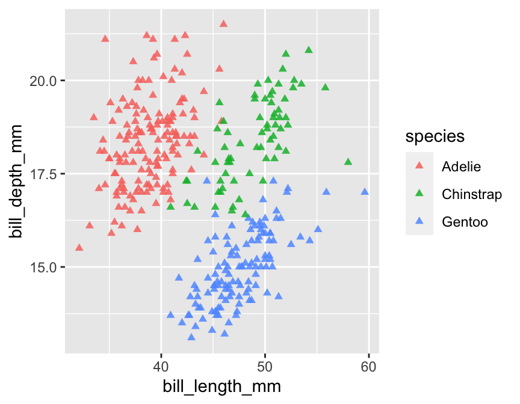
The point shape is set with the shape argument. There are a few different ways to specify point shapes in R. We used the numeric coding system in this example (17 = triangle). Unfortunately, the numeric codes aren’t at all intuitive. Here are the more common ones:
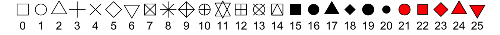
The point size is specified by the size argument. This has a baseline default value of 1. We assigned size a value of 1.5, thereby increasing the point size relative to the default. We could make the points smaller by using a value less than 1.
We made the points semi-transparent by setting the value of the alpha argument to be less than 1. In graphical systems, the ‘alpha channel’ specifies transparency—a value of 0 is taken to mean ‘completely invisible,’ and a value of 1 means ‘completely opaque.’
There are other arguments—such as fill and colour—that can also be used to adjust the way the points are rendered. We’ll look at these later.
The key message to take away from this customisation example is this—if we need to alter the properties of a geometric object (points, lines, ect), we do so by specifying the appropriate arguments in the geom_NAME function that defines the layer it belongs to.
14.1.1 Relationship between aesthetic mappings and geom properties
In the previous chapter, we saw that we could introduce information into a plot by setting aesthetic mappings in the aes part of its specification. In the scatter plot example, we included information about species identity by mapping the species variable to the colour aesthetic. What happens if we also try to set the colour within the geom_point part?
# display bill morphology scatter plot
ggplot(penguins,
# bill depth (y) vs bill length (x) by species (colour) + sex (shape)
aes(x = bill_length_mm, y = bill_depth_mm, colour = species)) +
# add points layer and customise appearance of points (including colour)
geom_point(colour = "skyblue", shape = 17, size = 1.5, alpha = 0.85)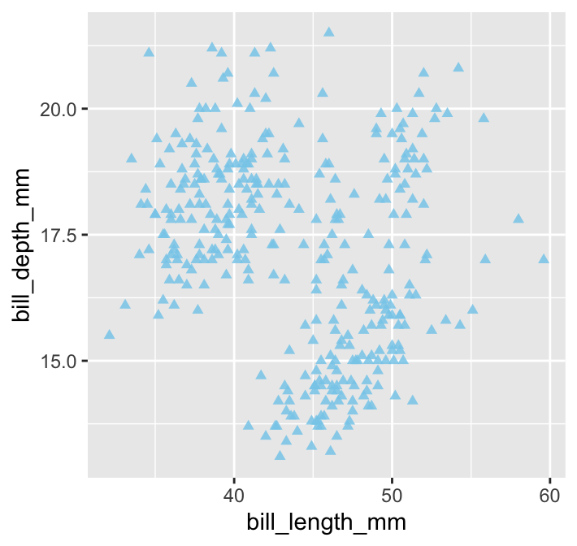
All the points are now one colour (‘sky blue’) which means we have lost the species information. What does this example demonstrate? When we set the properties of a geom, this will override any aesthetic mappings that conflict with our choice of customisation. Try to remember that—failing to do so is a good way to become frustrated.
Built-in colours in R
There is nothing special about ‘skyblue’ other than the fact that it is colour name known to R. There are over 650 built-in colour names. To see them, use a function called colours to print them all to the Console. Here are 25 selected at random:
sample(colours(), size = 25, replace = FALSE)## [1] "slateblue3" "lavender" "gray8" "pink"
## [5] "turquoise3" "slategray3" "hotpink" "gray15"
## [9] "tomato4" "grey50" "khaki1" "grey65"
## [13] "darkslategray" "royalblue" "gray29" "grey64"
## [17] "grey6" "palegreen3" "lightyellow" "firebrick1"
## [21] "gray81" "darkorange1" "darkorchid1" "goldenrod1"
## [25] "violetred2"14.2 Plot scales
Setting the arguments of a geom_ function applies changes in a layer-specific manner. Other kinds of customisation affect every layer in a plot. Remember what we said about scales in the previous chapter:
The scale part of a ggplot2 object controls how the information in a variable is mapped to the aesthetic properties. A scale takes the data and converts it into variation we can perceive, such as an x/y location or the colour and size of points in a plot.
Every aesthetic mapping has a scale associated with it. We adjust ‘how the information in a variable is mapped to the aesthetic properties’ by changing its corresponding scale.
As always, this kind of thing is best understood by example. Let’s adjust the scale associated with the y-axis aesthetic by increasing the number of the horizontal lines and their accompanying labels (the ‘guides’).
# display bill morphology scatter plot
ggplot(penguins,
# bill depth (y) vs bill length (x) by species (colour)
aes(x = bill_length_mm, y = bill_depth_mm, colour = species)) +
# add points layer and customise appearance of points
geom_point(shape = 17, size = 1.5, alpha = 0.85) +
# customise y-axis grid line and label locations
scale_y_continuous(breaks = seq(14, 20, by = 2))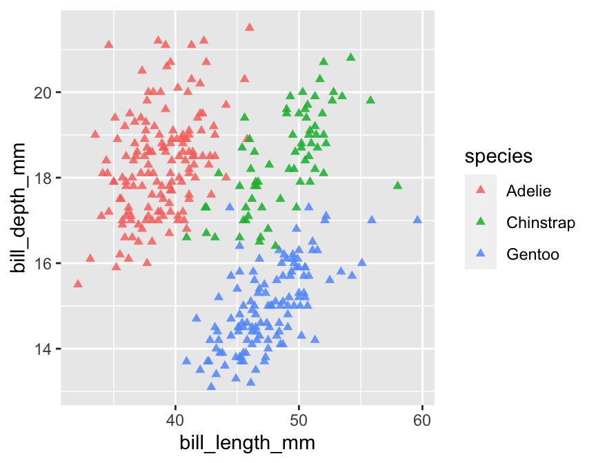
What’s going on here?
The aesthetic we wanted to alter was the y-axis position. The y-axis in this particular plot is associated with a continuous scale because
bill_depth_mmis a numeric variable. This means we have to apply thescale_y_continuousfunction to tweak the position of the y-axis guides.The
breaksargument ofscale_y_continuoustakes a numeric vector to specify where the guides should be drawn. We used the base Rseqfunction to set up a numeric vector containing the sequence: 14, 16, 18 and 20. That tells gglot2 to place the guides at 14, 16, 18 and 20 on the y-axis.
The functions that adjust a scale all have the general form scale_AES_TYP, where:
- the
AESbit in the name refers to the relevant aesthetic, and - the
TYPpart refers to the type of scale we want to apply.
Each kind of scale_AES_TYP function has its own set of arguments to control how the scale works. For example, the breaks argument of scale_y_continuous uses a numeric vector to specify where the guides should be drawn. We can do much fancier things if we want to. For example, the trans argument can be used to apply a particular transformation to an axis, such as a logarithm.
Predictably, there is also a scale_x_continuous function. We can use this in exactly the same way to control where the guides on the x-axis appear:
# display bill morphology scatter plot
ggplot(penguins,
# bill depth (y) vs bill length (x) by species (colour)
aes(x = bill_length_mm, y = bill_depth_mm, colour = species)) +
# add points layer and customise appearance of points
geom_point(shape = 17, size = 1.5, alpha = 0.85) +
# customise x- and y-axis grid line and label locations
scale_x_continuous(breaks = seq(34, 62, by = 4)) +
scale_y_continuous(breaks = seq(14, 20, by = 2))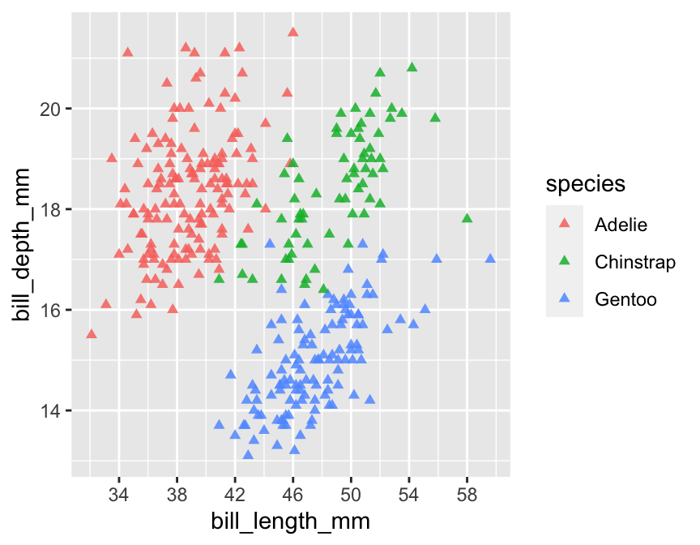
The key message to take away from this is that every aesthetic mapping has a scale associated with it. If we want to change how the information associated with an aesthetic mapping is displayed we have to change the corresponding scale. That suggests we can change the way point colours are associated with the species variable in our example by using one of the scale_colour_YY functions. That is correct:
# display bill morphology scatter plot
ggplot(penguins,
# bill depth (y) vs bill length (x) by species (colour)
aes(x = bill_length_mm, y = bill_depth_mm, colour = species)) +
# add points layer and customise appearance of points
geom_point(shape = 17, size = 1.5, alpha = 0.85) +
# customise x- and y-axis grid line and label locations
scale_x_continuous(breaks = seq(34, 62, by = 4)) +
scale_y_continuous(breaks = seq(14, 20, by = 2)) +
# customise the species colours ('value') and labels
scale_color_manual(
limits = c("Chinstrap", "Gentoo", "Adelie"),
values = c("cornflowerblue", "seagreen", "orangered3"),
labels = c(Chinstrap = "P. antarcticus", Gentoo = "P. papua", Adelie = "P. adeliae")
)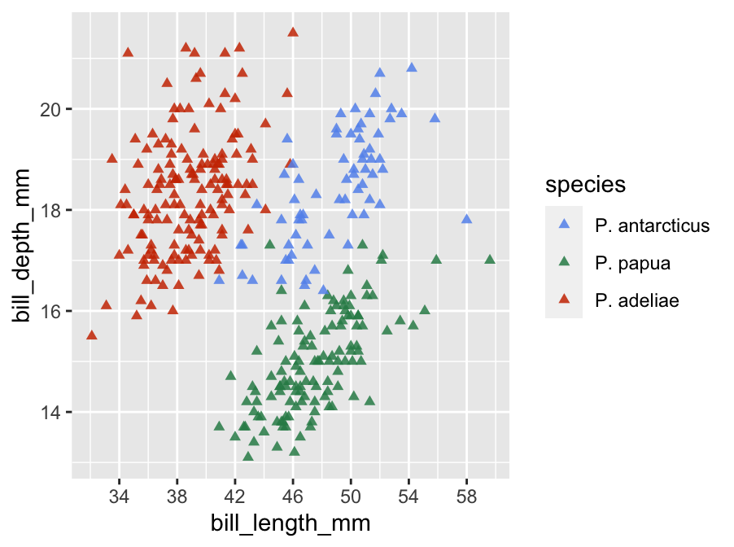
This uses scale_color_manual to achieve three things:
- it defines the order to display the three species in the legend via
limits, - it sets up a custom colour palette via
values, and - it alters the category labels via
labels(so that their scientific names are used).
Scales are one of the hardest aspects of ggplot2 to master. There are many different scales, each controlled by its own unique set of arguments. Fortunately, the defaults used by ggplot2 are often good enough to arrive at a reasonable plot without having to manipulate the scales.
14.3 Labels
What else might we like to tweak? Look at the x and y-axis labels. These are the names of the variables used in the x/y aesthetic mappings. These labels aren’t too bad, but they could be nicer to look at. We know ‘bill_depth_mm’ stands for ‘bill depth (measured in mm),’ so why not use an axis label more like that?
The axes labels are a feature of the whole plot—i.e. they do not belong to a particular layer. This means we can’t alter axis labels by passing arguments to the function that built a layer (geom_point). We have to use the labelling function: labs. This sets the label of any mapped aesthetics. For example, to set the labels of the x and y axes and the label associated with the colour mapping (i.e. the species legend title), use:
# display bill morphology scatter plot
ggplot(penguins,
# bill depth (y) vs bill length (x) by species (colour)
aes(x = bill_length_mm, y = bill_depth_mm, colour = species)) +
# add points layer and customise appearance of points
geom_point(shape = 17, size = 1.5, alpha = 0.85) +
# customise x- and y-axis grid line and label locations
scale_x_continuous(breaks = seq(34, 62, by = 4)) +
scale_y_continuous(breaks = seq(14, 20, by = 2)) +
# customise the species colours ('value') and labels
scale_color_manual(
limits = c("Chinstrap", "Gentoo", "Adelie"),
values = c("cornflowerblue", "seagreen", "orangered3"),
labels = c(Chinstrap = "P. antarcticus", Gentoo = "P. papua", Adelie = "P. adeliae")
) +
# set the the x/y-axis labels and legend label using `labs`
labs(x = "Bill length (mm)", y = "Bill depth (mm)", colour = "Penguin Species")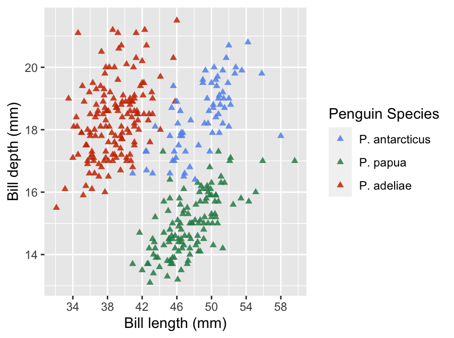
Using labs is easy—if a mapping was set up in aes we can change its label via a ‘name = value’ construct in labs. That’s it.
Finally, another way to set the axis labels is via the xlab and ylab. We tend not to use these because labs deals with all our labelling needs on its own. Why waste effort remembering three things if you only need to remember one?
14.4 Themes
The final route to customisation happens via the ‘theme’ of a plot. We haven’t considered the ggplot2 theme system at all yet. A ggplot2 theme deals with all the visual elements of a plot that aren’t directly handled by adjusting geom properties or scales. These are essentially the ‘non-data’ parts of a plot—features such as the colour of the plotting region and the grid lines, whether or not those grid lines are even displayed, the position of labels, the font used in labels, and so on.
Here’s a short example that adjusts the legend of the example plot:
# display bill morphology scatter plot
ggplot(penguins,
# bill depth (y) vs bill length (x) by species (colour)
aes(x = bill_length_mm, y = bill_depth_mm, colour = species)) +
# add points layer and customise appearance of points
geom_point(shape = 17, size = 1.5, alpha = 0.85) +
# customise x- and y-axis grid line and label locations
scale_x_continuous(breaks = seq(34, 62, by = 4)) +
scale_y_continuous(breaks = seq(14, 20, by = 2)) +
# customise the species colours ('value') and labels
scale_color_manual(
limits = c("Chinstrap", "Gentoo", "Adelie"),
values = c("cornflowerblue", "seagreen", "orangered3"),
labels = c(Chinstrap = "P. antarcticus", Gentoo = "P. papua", Adelie = "P. adeliae")
) +
# use `labs` to set x/y-axis labels and remove legend label
labs(x = "Bill length (mm)", y = "Bill depth (mm)", colour = "") +
# use theme to customise position and text formatting of the legend
theme(
legend.position = "top",
legend.text = element_text(face="italic")
)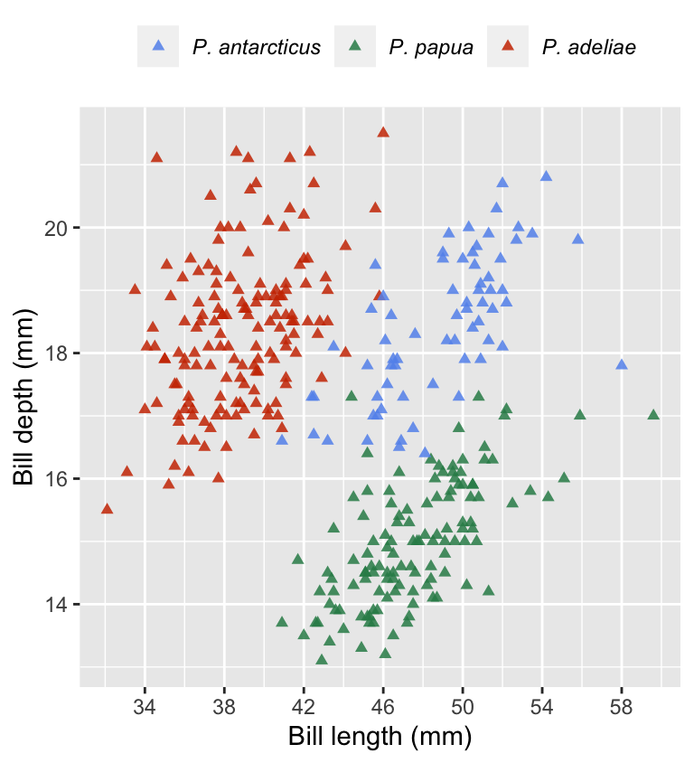
Changes to the theme are specified using… the theme function. We used theme to move the legend to the top of the plot (via legend.position) and show the species labels in italics (via legend.text). We also got rid of the legend title by setting the colour label to empty character string in labs. We could do that via theme but using labs is simpler.
The ggplot2 theme system is extremely powerful. Once we know how to use it, we can set up a custom theme and apply it with very little effort. However, that’s not an entirely trivial thing to do because there are just so many components of every plot. Most people just google whatever adjustment they want to make when the time comes. Even then, tweaking each individual part of a theme can be very time consuming. Fortunately, there are a range of standard themes built into ggplot2. Here’s how to apply a built-in theme:
# display bill morphology scatter plot
ggplot(penguins,
# bill depth (y) vs bill length (x) by species (colour)
aes(x = bill_length_mm, y = bill_depth_mm, colour = species)) +
# add points layer and customise appearance of points
geom_point(shape = 17, size = 1.5, alpha = 0.85) +
# customise x- and y-axis grid line and label locations
scale_x_continuous(breaks = seq(34, 62, by = 4)) +
scale_y_continuous(breaks = seq(14, 20, by = 2)) +
# customise the species colours ('value') and labels
scale_color_manual(
values = c("cornflowerblue", "seagreen", "orangered3"),
labels = c(Adelie = "P. adeliae", Chinstrap = "P. antarcticus", Gentoo = "P. papua")
) +
# use `labs` to set x/y-axis labels and remove legend label
labs(x = "Bill length (mm)", y = "Bill depth (mm)", colour = "") +
# apply 'black and white' theme
theme_bw(base_size = 13) +
# use theme to customise position and text formatting of the legend
theme(
legend.position = "top",
legend.text = element_text(face="italic")
)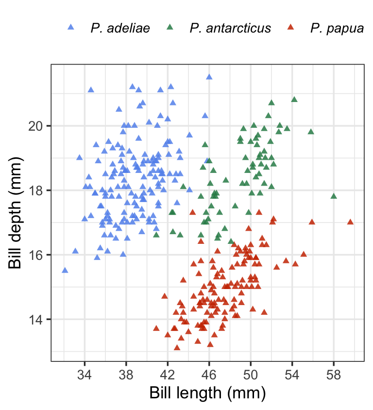
This uses + with the theme_bw function to add the built-in ‘black and white’ theme. This theme dispenses with the grey background that so many people dislike. There are a couple of things to note from this example:
To apply the changes to the legend position, we had to place the
themepart after we set the overall theme usingtheme_bw. Thetheme_bwfunction will override thethemechanges if we try to do it the other way round.We set the
base_sizeargument oftheme_bw. This rescales the text in a plot, leaving the relative size of the different elements unchanged. We did not have to do this, but it is worth showing off because it is such a useful trick.
There aren’t that many themes built into ggplot2. Here’s a quick look at them:
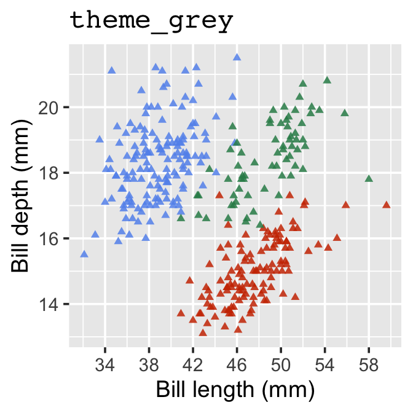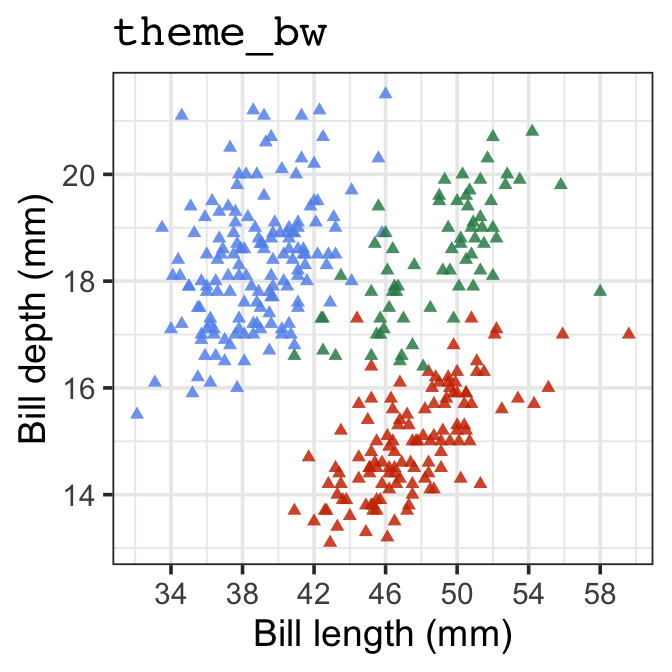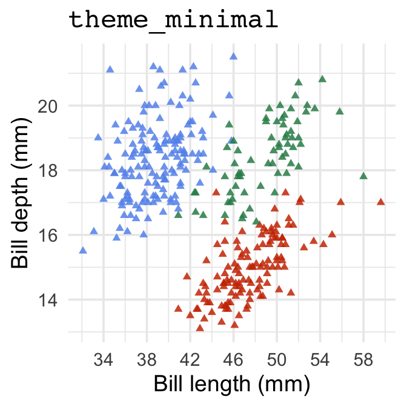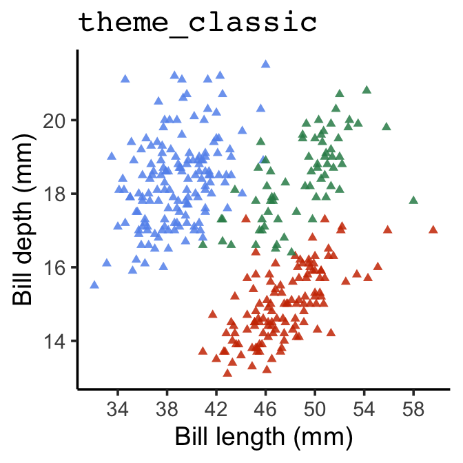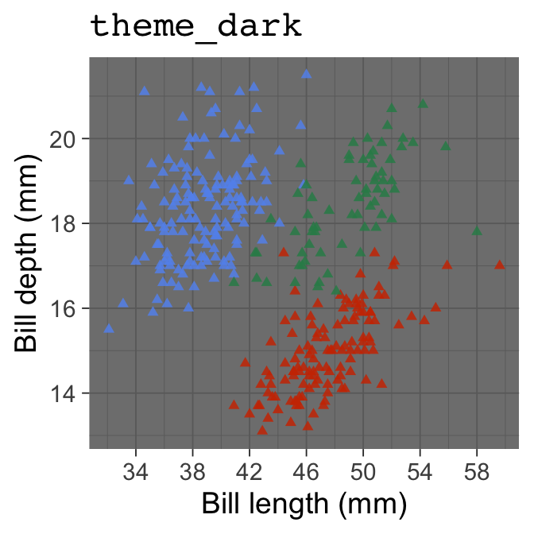
14.5 Advice for making plots
We’ll end this section with a bit of advice about making your own plots with ggplot2. Look at the code we ended up with for the final scatter plot above. It’s complicated! However, we didn’t make that in one go. We built up to it slowly, tweaking one thing at a time. That’s the trick—start with a basic skeleton and gradually increase the level of customisation. Begin by getting the aesthetic mappings and the faceting correct so that all the relevant variables are represented. Then introduce one bit of customisation and review the plot to ensure it worked and everything looks right. Keep doing this, one bit of customisation at a time, until the plot looks right.